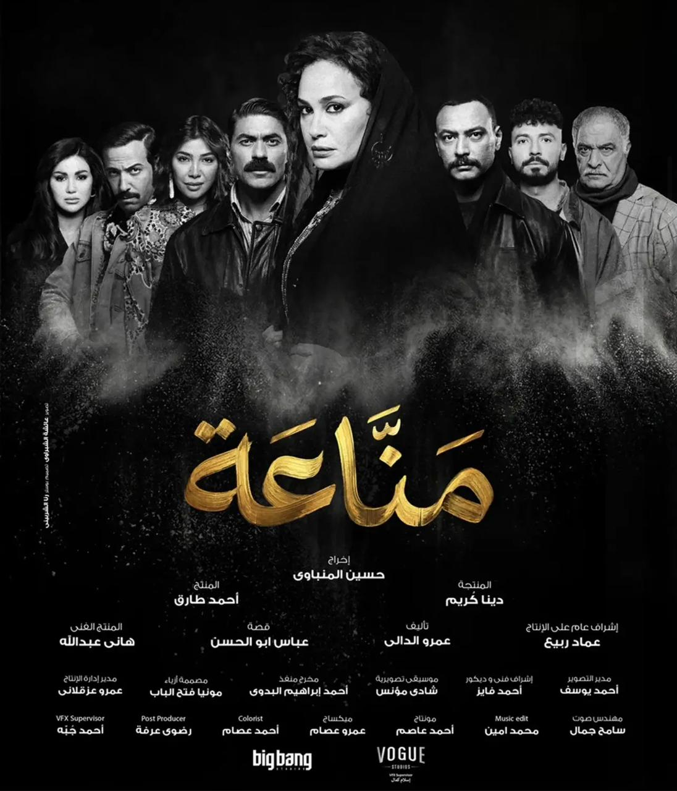

Feنony منصة متخصصة في أخبار الفن والدراما والسينما.
Feنony موقع مخصص لاخبار الفن و الدراما و السينما و الفنانين ، هنعيش معاه كل ما يخص الفن و كواليسه لحظة بلحظة

صحفية ومراسلة ومذيعة بخبرة أكثر من ست سنوات في مجال الإعلام، اتسحرت بعالم الفن والسينما والدراما وقررت إنها تكون جزء منه وتنقللكوا الأحداث وكواليسه لحظة بلحظة.
أثارت الفنانة مهـا نصار، جدل واسع على مواقع التواصل الاجتماعي خلال الساعات الماضية، بعد أن نشرت بوست علي حسابها الخاص علي فيسبوك، و التي هاجمت فيه الفنانة هند صبري، بطلة مسلسلها الجديد "منَاعة " المقرر عرضه في موسم رمضان 2026، و لكن سرعان ما تم حذفه.
تقوم الفنانة مها نصار، خلال أحداث المسلسل شخصية شقيقة هند صبري، حيث تلعب دورًا محوريًا ومؤثرًا في مسار القصة، وتظهر كشخصية داعمة لها في مختلف الأزمات التي تواجهها على مدار الأحداث، وهو ما يضيف بُعدًا إنسانيًا قويًا للعلاقة بين الشقيقتين داخل العمل.
ومسلسل "مناعة" من بطولة الفنانة هند صبري، و مها نصار، محمد أنور، خالد سليم، أحمد خالد صالح، رياض الخولي، أحمد شامي، كريم قاسم، محمد علي رزق، ميمي جمال، ومها نصار، والعمل من تأليف عمرو الدالي وإخراج حسين المنباوي.
وتدور أحداث المسلسل في إطار اجتماعي تشويقي، حيث تبدأ القصة بامرأة تجد نفسها وحيدة في منتصف الثمانينيات بعد مقتل زوجها الذي كان يعمل في تجارة المخدرات، لتدخل في صراع قاسٍ من أجل حماية أبنائها الثلاثة. ومع تصاعد الأحداث، تتحول محاولاتها للبقاء إلى رحلة مليئة بالمخاطر داخل عالم الجريمة، وصولًا إلى صعودها كأحد الأسماء المؤثرة في هذا العالم، قبل أن تنقلب الموازين مع تدخل السلطات، لتواجه مصيرًا حاسمًا وعواقب اختياراتها.
يُذكر أن آخر أعمال الفنانة هند صبري، كانت في الجزء الثاني من مسلسل "البحث عن علا" عام 2024، من بطولة هاني عادل، و سوسن بدر، و من تأليف مها الوزيري وإخراج هادي الباجوري، والذي حقق نسب مشاهدة مرتفعة وقت عرضه.
وآخر أعمال الفنانة مها نصار، مسلسل "ورد و شكولاتة" عام 2025، من بطولة زينة، ومحمد فراج، و من تأليف محمد رجاء، و إخراج محمد العدل.
تفاصيل جديدة عن أعمال رمضان 2026.
أبرز تصريحات الفنانين خلال الساعات الماضية.
أهم ما يتصدر السوشيال ميديا.